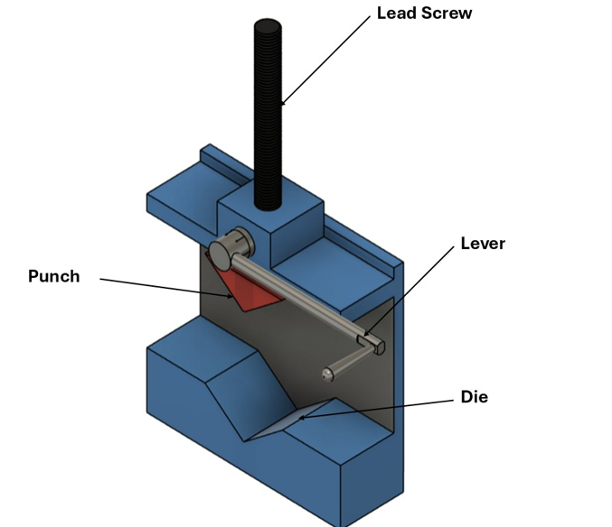
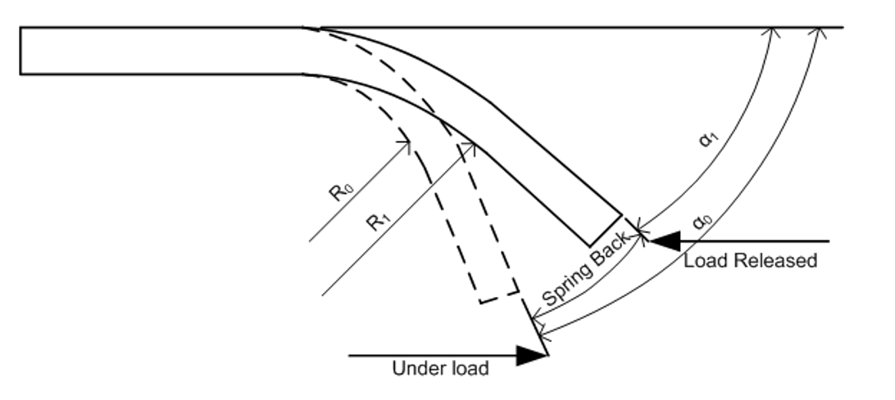

Theory
Bending is a fundamental metal forming process in which an external force is applied to a workpiece to produce a permanent change in shape, usually in the form of an angular bend or curvature. It is extensively used in sheet metal fabrication, structural components, brackets, frames, and piping systems. During bending, the material undergoes both elastic deformation (temporary and recoverable) and plastic deformation (permanent).
In bending, the material is subjected to a combination of tensile, compressive, and shear stresses. The outer surface of the bend experiences tensile stress and elongation, while the inner surface undergoes compressive stress and shortening. The magnitude of these stresses depends on the applied load, material properties, bend radius, and thickness of the workpiece. If the applied stress remains below the yield strength of the material, the deformation is purely elastic and the material returns to its original shape after unloading. However, when the applied stress exceeds the yield strength, plastic deformation occurs, resulting in a permanent bend.
Common bending methods used in industry include V-bending, U-bending, air bending, bottoming, and coining. Among these, V-bending and air bending are commonly employed in laboratory experiments and sheet metal fabrication due to their simplicity and flexibility. Understanding the mechanics of bending is essential for analyzing defects such as spring back, thinning, and cracking, and for achieving dimensional accuracy in formed components.

When a bending load is applied, the outer fibers of the material are subjected to tensile stress, while the inner fibers experience compressive stress. Between these two regions lies the neutral axis, where the stress and strain are theoretically zero. As the applied stress exceeds the yield strength of the material, plastic deformation begins. Due to non-uniform stress distribution across the thickness, the neutral axis shifts toward the inner surface of the bend. In most ductile metals, the neutral axis is located approximately between 0.3t and 0.5t from the inner surface, where t is the thickness of the specimen.

After removal of the bending force, the elastic portion of deformation is recovered. This elastic recovery causes the bent component to partially return toward its original shape, resulting in an increase in the bend angle or bend radius compared to the condition under load. Spring back is particularly significant in cold working operations such as V-bending, air bending, and roll bending.

R0 = Bend radius before springback
R1 = Bend radius after springback
α0 = Bending angle before springback
α1 = Bending angle after springback
Spring Back Angle = Bend angle before release (α0) − Final bend angle after release (α1)
Parameters Affecting Spring Back
-
Material Properties
Spring back is strongly influenced by the modulus of elasticity (E) and yield strength (σy) of the material. Materials with high yield strength and low modulus of elasticity exhibit greater spring back. The ratio (σy/E) is commonly used as an indicator of spring back tendency; a higher ratio leads to greater elastic recovery. -
Sheet Thickness
Thinner sheets generally show more spring back than thicker sheets because they undergo lower plastic deformation relative to elastic deformation. -
Bend Radius
An increase in bend radius increases spring back. Smaller bend radii produce higher plastic strain, which reduces elastic recovery after unloading. -
Bend Angle
Larger bend angles tend to increase spring back due to higher elastic strain energy stored in the material. -
Bending Method
Air bending results in more spring back compared to bottoming and coining because the material is not fully constrained and experiences lower plastic deformation.
Effect of Different Materials on Spring Back
-
Mild Steel
Mild steel exhibits moderate spring back due to its relatively low yield strength and moderate modulus of elasticity. Its predictable behavior makes it suitable for general bending operations. -
Stainless Steel
Stainless steel shows significantly higher spring back compared to mild steel. This is due to its high yield strength, strong strain hardening behavior, and high elastic recovery. Austenitic stainless steels require greater over-bending or specialized tooling to achieve accurate final angles. -
Brass
Brass generally exhibits lower spring back than stainless steel and is easier to form. Its good ductility and relatively lower yield strength help reduce elastic recovery, making it suitable for precision bending applications. -
Aluminum
Aluminum alloys exhibit higher spring back than steels mainly due to their low modulus of elasticity. Even with lower yield strength, aluminum shows significant elastic recovery, making spring back compensation critical.
There is no universal spring back value for any material because spring back is not a fixed material constant. It depends on a combination of factors including material properties, thickness, bend radius, bending method, tooling geometry, heat treatment, rolling direction, and strain history. Even the same material can exhibit different spring back values under different processing conditions. Therefore, spring back is usually predicted using empirical relations, numerical simulations, or experimental trial-and-error methods.
To compensate for spring back, practical techniques such as over-bending, bottoming, coining, and optimized die design are commonly employed. Accurate understanding and control of spring back are essential for achieving dimensional accuracy in bending operations.
Applications of Bending and Spring Back Knowledge
Understanding bending and spring back is critical in many engineering and manufacturing applications. Accurate prediction and compensation of spring back help in achieving dimensional accuracy, improving product quality, and reducing material wastage.
-
Automotive Industry
Bending and spring back knowledge is essential in the manufacturing of automobile body panels, brackets, chassis components, and structural frames. Proper spring back compensation ensures correct panel fit, dimensional accuracy, and aesthetic quality. -
Aerospace Industry
In aerospace applications, bending is used to form thin-walled components, structural sheets, and stiffeners. Precise control of spring back is crucial to maintain tight tolerances and ensure safety and performance of aircraft structures. -
Piping and Tubing
Bending of pipes and tubes is widely used in fluid transport systems, heat exchangers, and hydraulic lines. Accurate prediction of spring back helps achieve precise bend angles without compromising structural integrity or flow characteristics. -
Construction and Structural Engineering
Bending processes are used to form metal supports, beams, reinforcements, and frames. Proper understanding of spring back ensures correct alignment, load-bearing capability, and structural safety. -
Sheet Metal Fabrication
In the production of enclosures, cabinets, ducts, and panels, dimensional accuracy is vital. Controlling spring back improves assembly accuracy and reduces rework and scrap. -
Consumer Products
Many household appliances, metal furniture, and product frames are manufactured using bending operations. Effective spring back control enhances product appearance, strength, and consistency.
Accurate prediction and compensation for spring back are essential to achieve dimensional precision, reduce wastage, and ensure reliable performance of components across these applications.
Apparatus Required
- Manual bending fixture
- Mild steel strip or rod
- Protractor
- Clamps and holding jig
- Bending die